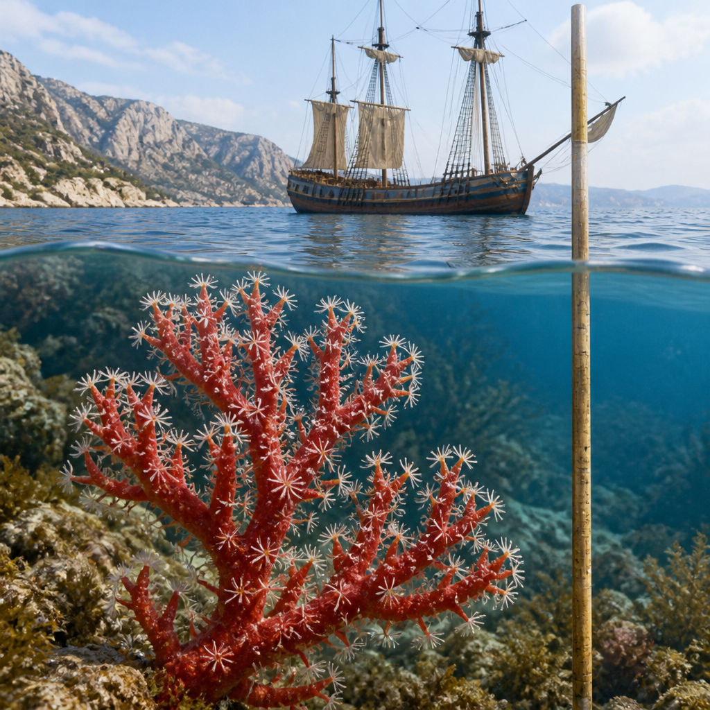
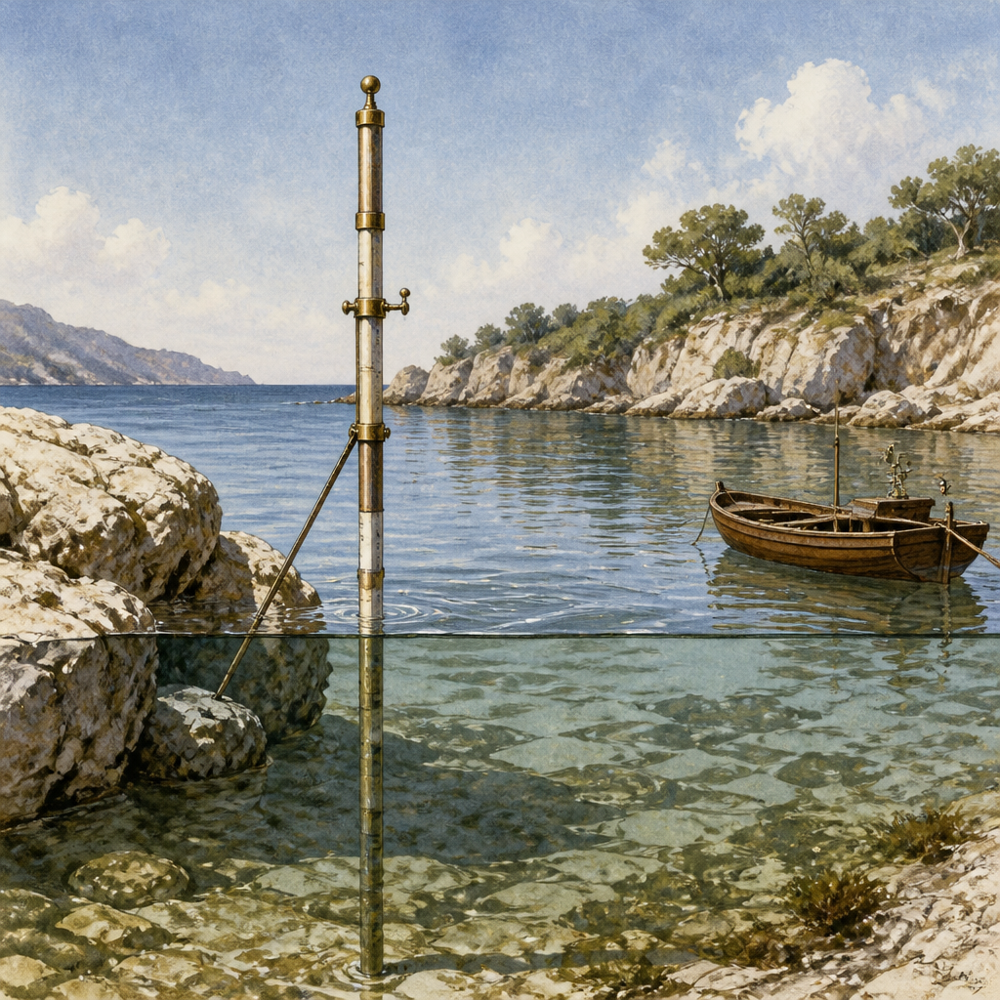

Le osservazioni del naturalista Luigi Ferdinando Marsili vengono rilette e confrontate con i dati moderni.
Tre secoli fa, lungo le coste della Provenza, un ramo di corallo immerso nell’acqua marina sembrò trasformarsi. Il mattino dopo la raccolta, il naturalista bolognese Luigi Ferdinando Marsili osservò la comparsa di minuscoli «fiori» bianchi. Quando estrasse il ramo per guardarli meglio, quelle piccole strutture scomparvero. Non erano fiori: erano i polipi del corallo, piccoli organismi animali che costituiscono la parte vivente della colonia.
Nel periodo in cui Marsili compì questa osservazione, la natura del corallo era ancora discussa: alcuni studiosi lo consideravano un minerale, altri una pianta. L’episodio è una delle osservazioni pionieristiche della biologia marina, la disciplina che studia gli organismi e gli ambienti del mare. Ma le ricerche di Marsili non si limitarono ai coralli: raccolse anche dati che oggi possono offrire una finestra sulle condizioni del Mediterraneo prima dell’era industriale.
Tra il 1706 e il 1707, nel Golfo del Leone, Marsili raccolse campioni d’acqua a diverse profondità. Ne misurò la temperatura e il peso, studiò i fondali e osservò le variazioni del livello del mare. Per seguire queste ultime usava un’asta graduata nella baia di Cassis, vicino a Marsiglia. Tra marzo e aprile del 1707 effettuò osservazioni cinque volte al giorno, annotando anche vento, correnti e fasi lunari.
I risultati confluirono nell’Histoire physique de la mer, pubblicata ad Amsterdam nel 1725. L’opera comprende numerose tavole e illustrazioni scientifiche: organismi marini, strumenti di misura e caratteristiche dei fondali. In tutto, le tavole sono 52. Oggi non sono soltanto documenti storici: insieme a carte e tabelle originali, aiutano a ricostruire come furono svolte quelle ricerche.

Nell’ambito del progetto MACMAP, finanziato dall’INGV, un gruppo di ricercatori ha recuperato e reinterpretato i dati contenuti nel volume di Marsili per renderli confrontabili con le misurazioni moderne. Il lavoro combina ricerca storica e scienze marine. Trascrivere i numeri delle vecchie tabelle non è sufficiente: bisogna ricostruire il significato delle unità di misura, riconoscere gli strumenti usati, interpretare le carte geografiche dell’epoca e valutare quanto possano essere affidabili le misurazioni.
Un caso riguarda il peso dell’acqua marina. Marsili aveva registrato i campioni raccolti in località diverse del Golfo del Leone usando once, dragme e grani. Attraverso le indicazioni del trattato e l’analisi del contesto storico-scientifico, i ricercatori hanno convertito quei valori in misure di densità. La densità è una proprietà fisica che indica il rapporto tra massa e volume dell’acqua; nel mare è legata, fra gli altri fattori, alla temperatura e alla salinità.
Per individuare i luoghi del campionamento, le mappe del volume si sono rivelate decisive. Marsili aveva segnato i punti di prelievo con il simbolo di una piccola anfora. Digitalizzando e analizzando queste carte, il gruppo di ricerca ha ricostruito la posizione dei punti e li ha messi in relazione con le attuali informazioni geografiche e oceanografiche.
Diversi valori di densità ricavati dalle osservazioni di Marsili sono risultati ragionevolmente compatibili con quelli misurati in epoche più recenti nelle stesse aree del Mediterraneo. Il risultato non elimina i limiti degli strumenti settecenteschi, ma mostra il valore che dati storici ben interpretati possono avere per studiare l’ambiente.
Anche le rappresentazioni dei fondali sono state confrontate con le moderne carte batimetriche, cioè le mappe che descrivono profondità e forme del fondo marino. Sono emerse imprecisioni, soprattutto per le profondità maggiori di 100 metri. Tuttavia, le tavole di Marsili individuavano correttamente alcune caratteristiche importanti, fra cui la piattaforma continentale e un canyon sottomarino.
Più complessa è stata l’analisi delle maree. Rielaborando le registrazioni raccolte a Cassis nel 1707, gli studiosi hanno riconosciuto oscillazioni riconducibili al ciclo di marea. Le incertezze dovute alla frequenza delle osservazioni e agli strumenti disponibili, però, non permettono di arrivare a conclusioni definitive sulle eventuali variazioni avvenute nei secoli.
La rilettura delle osservazioni di Marsili mostra come archivi, mappe e immagini scientifiche possano tornare utili alla ricerca contemporanea. Questi dati offrono informazioni sulle condizioni del Mediterraneo prima dell’era industriale e possono contribuire allo studio dei cambiamenti ambientali, a condizione di considerarne con attenzione limiti e incertezze.
Questo articolo l'hai letto sul blog di Meteo News Radar: un'app che ti mostra da dove vengono i numeri, invece di limitarsi a dartelo. E ogni mattina ne trovi uno nuovo come questo.